public/assets/animals/axolotl_mutant.png
E · 1254×1254 · 2537 KB
SHA-256 c5f0538991902f96…
직접 참조 False · 동적 경로 후보 False · 유사 후보 0
No static code reference found; verify runtime, CSS, save compatibility, and archive role.
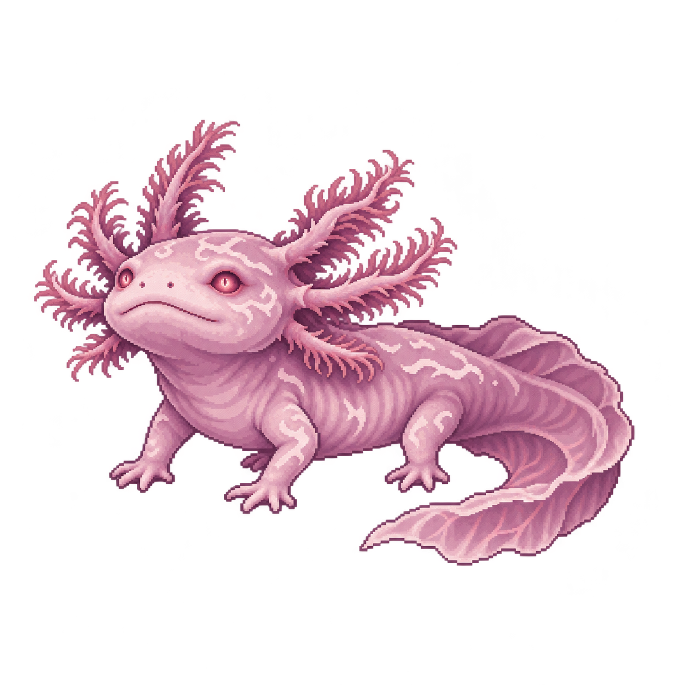
public/assets/animals/axolotl_uncanny.png
E · 1254×1254 · 1022 KB
SHA-256 af4e8c00a6ab11b3…
직접 참조 False · 동적 경로 후보 False · 유사 후보 0
No static code reference found; verify runtime, CSS, save compatibility, and archive role.

public/assets/animals/chimera_mutant.png
E · 1254×1254 · 2156 KB
SHA-256 ede5192f0242f39e…
직접 참조 False · 동적 경로 후보 False · 유사 후보 0
No static code reference found; verify runtime, CSS, save compatibility, and archive role.
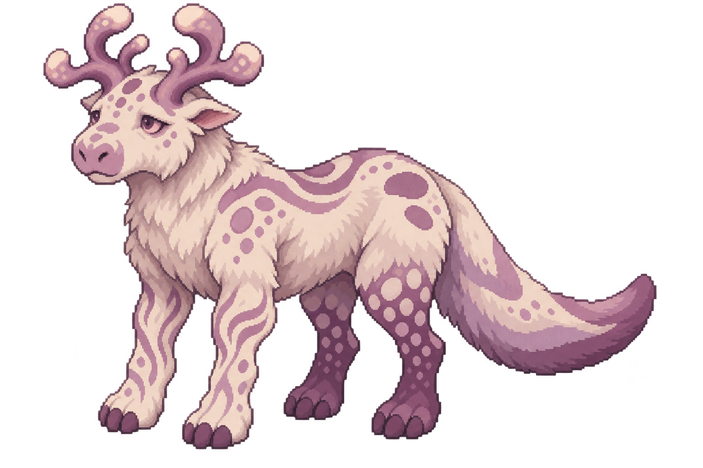
public/assets/animals/chimera_uncanny.png
E · 1254×1254 · 1071 KB
SHA-256 1173626d6b89feee…
직접 참조 False · 동적 경로 후보 False · 유사 후보 0
No static code reference found; verify runtime, CSS, save compatibility, and archive role.
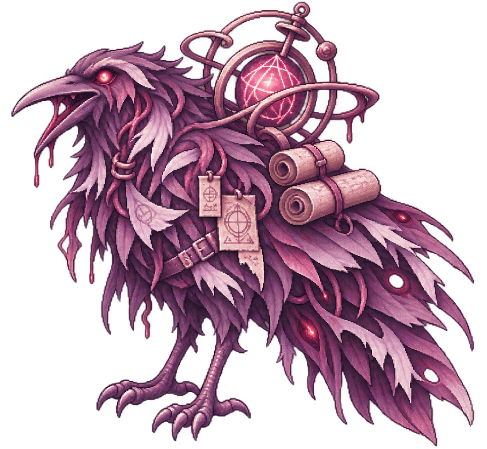
public/assets/animals/crow_mutant.png
D · 964×887 · 1187 KB
SHA-256 4a75cc152abebf05…
직접 참조 False · 동적 경로 후보 False · 유사 후보 0
Manual visual replacement candidate only; preserve active asset until a conforming image is generated, checked, and approved.
Contact-sheet review: composer/resonance identity is less immediately legible than other role-driven concepts. Inspect full size before replacement.
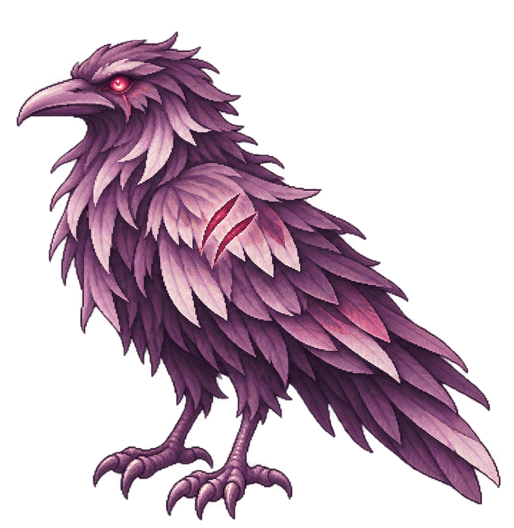
public/assets/animals/crow_uncanny.png
E · 863×887 · 780 KB
SHA-256 fc0b01f49e05ddc2…
직접 참조 False · 동적 경로 후보 False · 유사 후보 0
No static code reference found; verify runtime, CSS, save compatibility, and archive role.
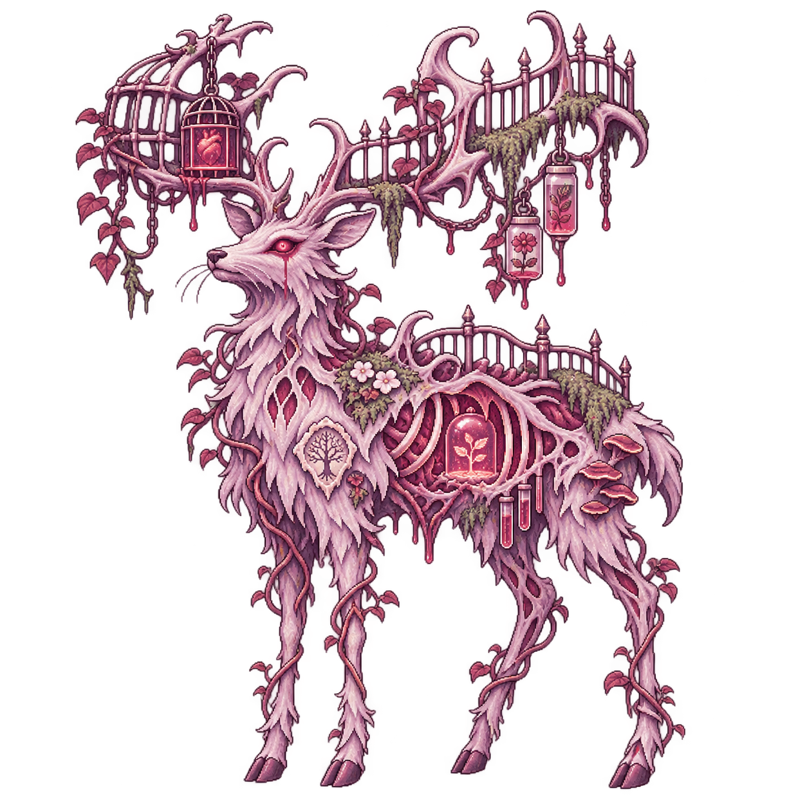
public/assets/animals/deer_mutant.png
E · 1254×1254 · 1847 KB
SHA-256 e6cd4c6325dde8be…
직접 참조 False · 동적 경로 후보 False · 유사 후보 0
No static code reference found; verify runtime, CSS, save compatibility, and archive role.
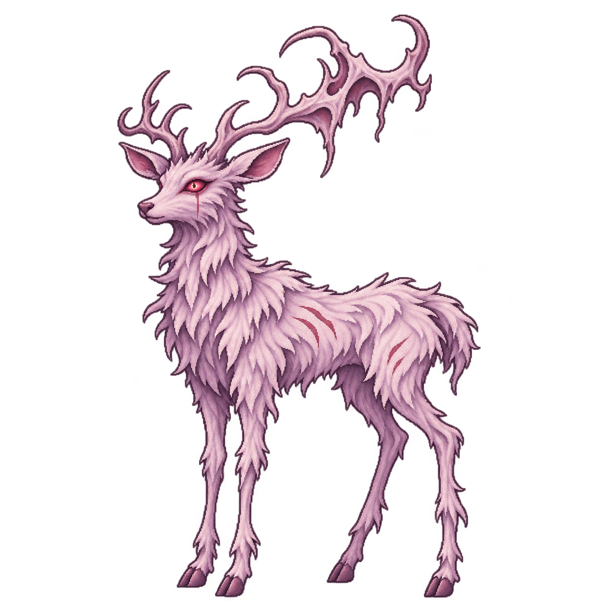
public/assets/animals/deer_uncanny.png
E · 1254×1254 · 1010 KB
SHA-256 a29cb284ff3b445f…
직접 참조 False · 동적 경로 후보 False · 유사 후보 0
No static code reference found; verify runtime, CSS, save compatibility, and archive role.
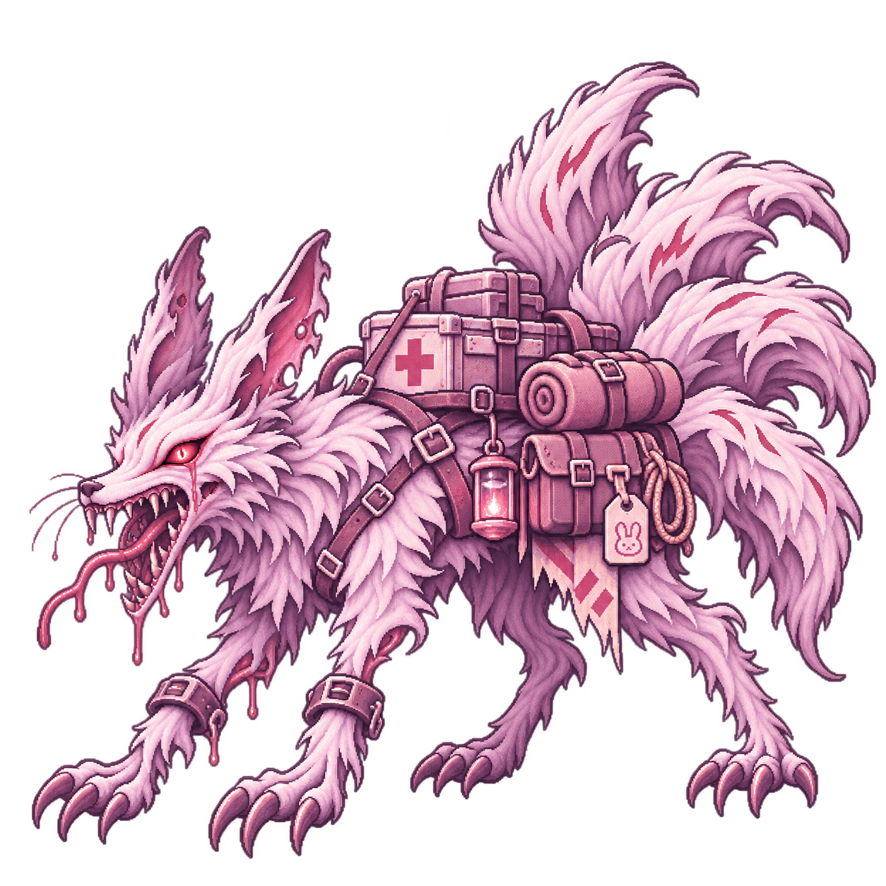
public/assets/animals/fox_mutant.png
D · 1254×1254 · 1899 KB
SHA-256 4a3e2f844d0eb034…
직접 참조 False · 동적 경로 후보 False · 유사 후보 0
Manual visual replacement candidate only; preserve active asset until a conforming image is generated, checked, and approved.
Contact-sheet review: medical cross and rabbit marker conflict with the fox quartermaster identity. Preserve until a role-correct replacement is generated and approved.
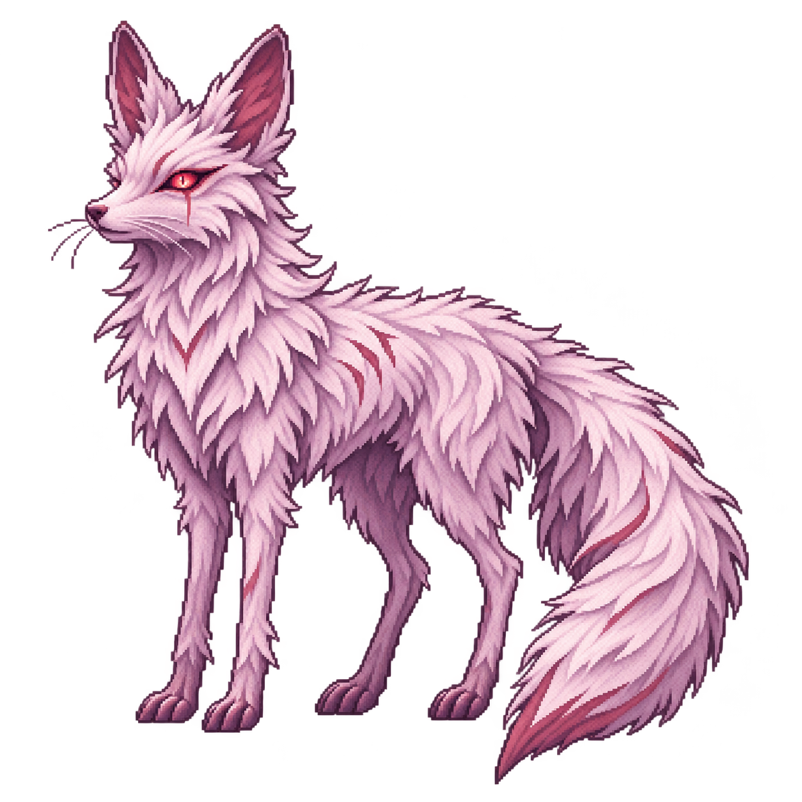
public/assets/animals/fox_uncanny.png
E · 1254×1254 · 1527 KB
SHA-256 8cfbf1dca8ca3eea…
직접 참조 False · 동적 경로 후보 False · 유사 후보 0
No static code reference found; verify runtime, CSS, save compatibility, and archive role.

public/assets/animals/lynx_mutant.png
D · 1254×1254 · 2623 KB
SHA-256 e221a2a93b7a198d…
직접 참조 False · 동적 경로 후보 False · 유사 후보 0
Manual visual replacement candidate only; preserve active asset until a conforming image is generated, checked, and approved.
Contact-sheet review: lynx sensory/radar mutation is not clearly readable at contact-sheet scale. Inspect full size before replacement.

public/assets/animals/lynx_uncanny.png
E · 1254×1254 · 1131 KB
SHA-256 1dc640430300e11a…
직접 참조 False · 동적 경로 후보 False · 유사 후보 0
No static code reference found; verify runtime, CSS, save compatibility, and archive role.
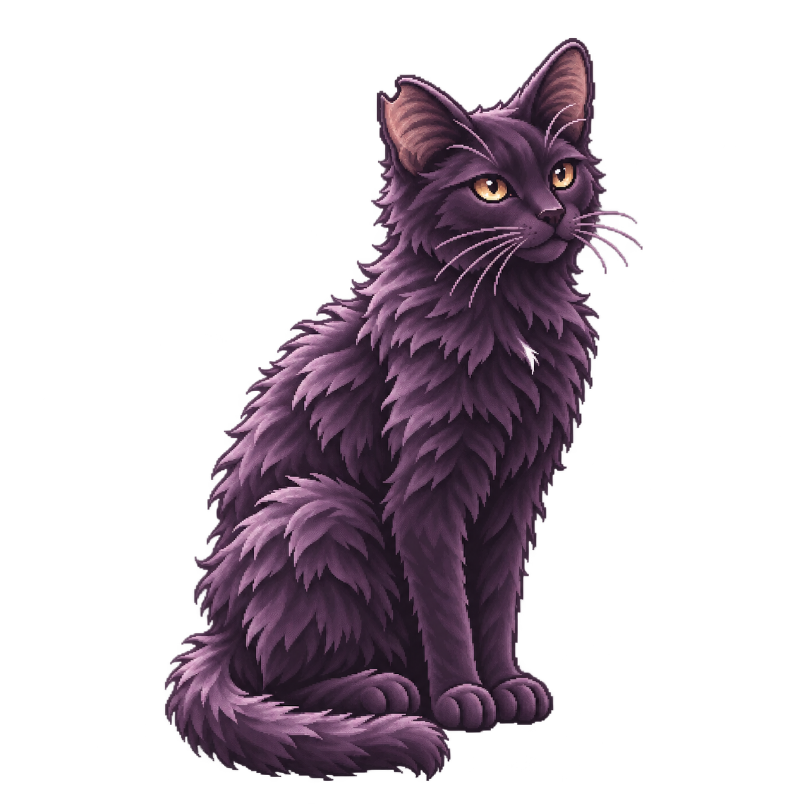
public/assets/animals/m00_normal.png
D · 1254×1254 · 1028 KB
SHA-256 9fbb759da5b53828…
직접 참조 True · 동적 경로 후보 False · 유사 후보 1
Manual visual replacement candidate only; preserve active asset until a conforming image is generated, checked, and approved.
Contact-sheet review: smoother, illustration-like shading than the other animal sprites; possible pixel-density/style mismatch. Preserve until a true replacement is generated and approved.

public/assets/animals/moth_mutant.png
E · 1254×1254 · 2619 KB
SHA-256 c313d0e55bec93ef…
직접 참조 False · 동적 경로 후보 False · 유사 후보 0
No static code reference found; verify runtime, CSS, save compatibility, and archive role.

public/assets/animals/moth_uncanny.png
E · 1536×1024 · 1872 KB
SHA-256 06dec72d2eef07d7…
직접 참조 False · 동적 경로 후보 False · 유사 후보 0
No static code reference found; verify runtime, CSS, save compatibility, and archive role.
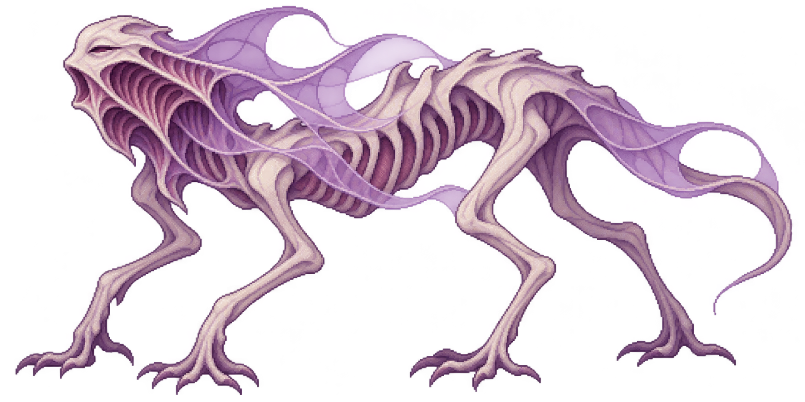
public/assets/animals/mutant_mutant.png
E · 1774×887 · 2630 KB
SHA-256 36baabdab6be9a22…
직접 참조 False · 동적 경로 후보 False · 유사 후보 0
No static code reference found; verify runtime, CSS, save compatibility, and archive role.
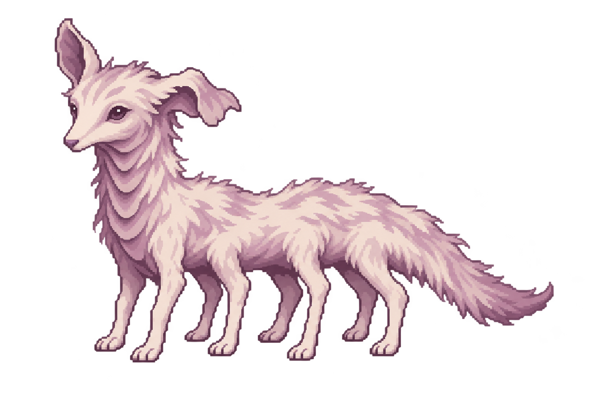
public/assets/animals/mutant_uncanny.png
E · 1536×1024 · 1417 KB
SHA-256 5e22e20afef018f1…
직접 참조 False · 동적 경로 후보 False · 유사 후보 0
No static code reference found; verify runtime, CSS, save compatibility, and archive role.

public/assets/animals/otter_mutant.png
E · 1200×1200 · 1396 KB
SHA-256 3ca7062e7e2b16c1…
직접 참조 False · 동적 경로 후보 False · 유사 후보 0
No static code reference found; verify runtime, CSS, save compatibility, and archive role.

public/assets/animals/otter_uncanny.png
E · 1200×1200 · 596 KB
SHA-256 5cd2ff5ddf9ea8ab…
직접 참조 False · 동적 경로 후보 False · 유사 후보 0
No static code reference found; verify runtime, CSS, save compatibility, and archive role.
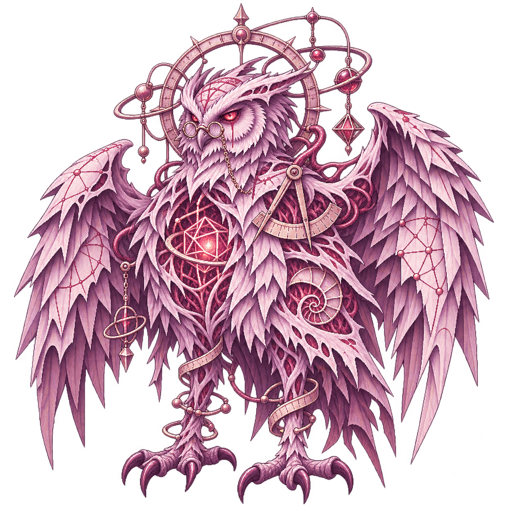
public/assets/animals/owl_mutant.png
E · 1254×1254 · 2575 KB
SHA-256 c36cbe3c27ef4bda…
직접 참조 False · 동적 경로 후보 False · 유사 후보 0
No static code reference found; verify runtime, CSS, save compatibility, and archive role.

public/assets/animals/owl_uncanny.png
E · 1254×1254 · 1618 KB
SHA-256 f1c9c18a57f7e5b6…
직접 참조 False · 동적 경로 후보 False · 유사 후보 0
No static code reference found; verify runtime, CSS, save compatibility, and archive role.

public/assets/animals/rabbit_mutant.png
E · 1254×1254 · 2217 KB
SHA-256 2c5269e983afd147…
직접 참조 False · 동적 경로 후보 False · 유사 후보 0
No static code reference found; verify runtime, CSS, save compatibility, and archive role.
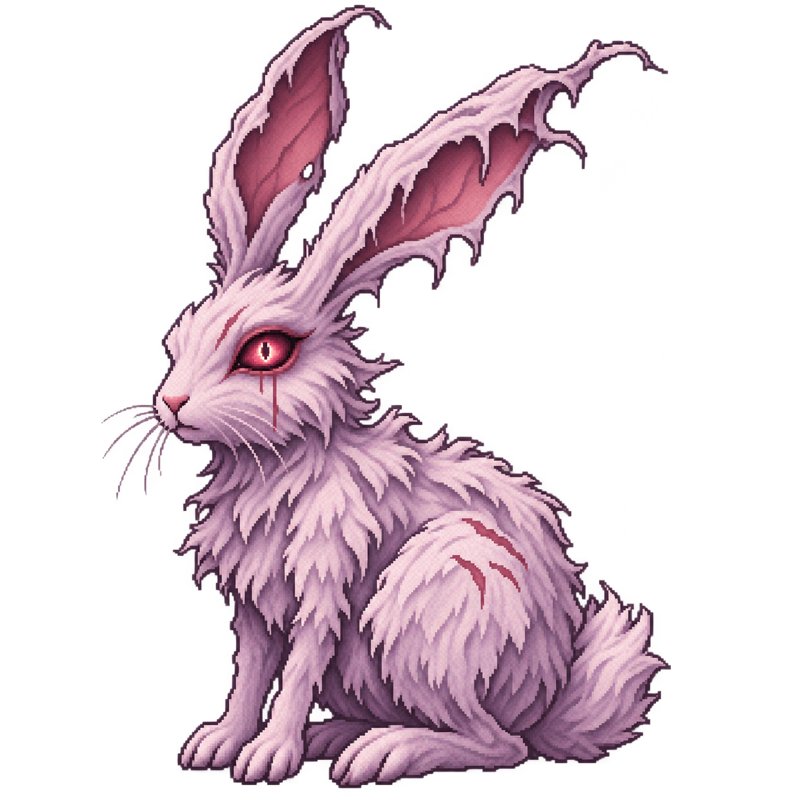
public/assets/animals/rabbit_uncanny.png
E · 1254×1254 · 1400 KB
SHA-256 a866573722e36ce0…
직접 참조 False · 동적 경로 후보 False · 유사 후보 0
No static code reference found; verify runtime, CSS, save compatibility, and archive role.

public/assets/animals/specter_mutant.png
E · 1254×1254 · 1824 KB
SHA-256 de4eadf2c9f2ea22…
직접 참조 False · 동적 경로 후보 False · 유사 후보 0
No static code reference found; verify runtime, CSS, save compatibility, and archive role.

public/assets/animals/specter_uncanny.png
E · 1254×1254 · 945 KB
SHA-256 864abab0f1626d9c…
직접 참조 False · 동적 경로 후보 False · 유사 후보 0
No static code reference found; verify runtime, CSS, save compatibility, and archive role.

public/assets/animals/wolf_mutant.png
E · 1396×1396 · 2365 KB
SHA-256 567a38b834746623…
직접 참조 False · 동적 경로 후보 False · 유사 후보 0
No static code reference found; verify runtime, CSS, save compatibility, and archive role.
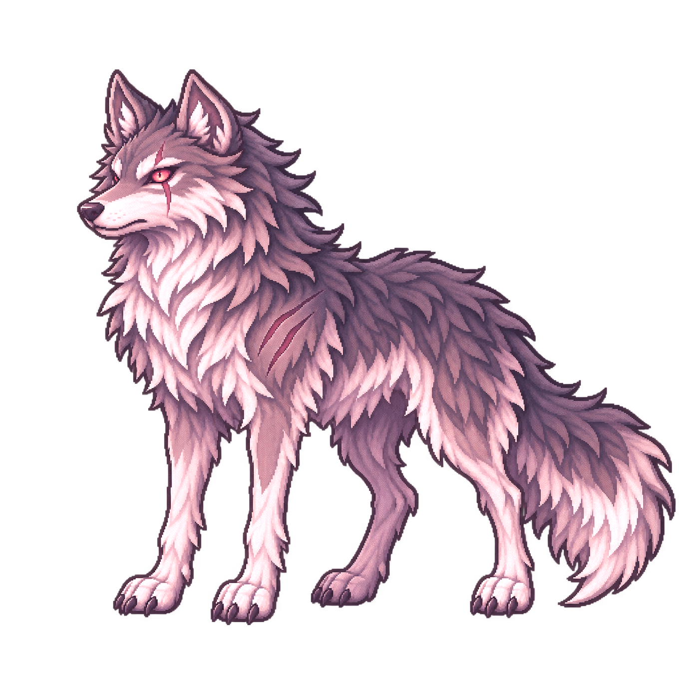
public/assets/animals/wolf_uncanny.png
E · 1396×1396 · 1498 KB
SHA-256 da94e3a837e9007b…
직접 참조 False · 동적 경로 후보 False · 유사 후보 0
No static code reference found; verify runtime, CSS, save compatibility, and archive role.
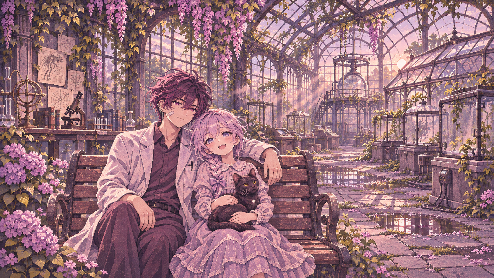
public/assets/archive/bg_origin_lab_family_photo.png
E · 1672×941 · 3644 KB
SHA-256 662adaadd2644dd2…
직접 참조 False · 동적 경로 후보 False · 유사 후보 0
No static code reference found; verify runtime, CSS, save compatibility, and archive role.
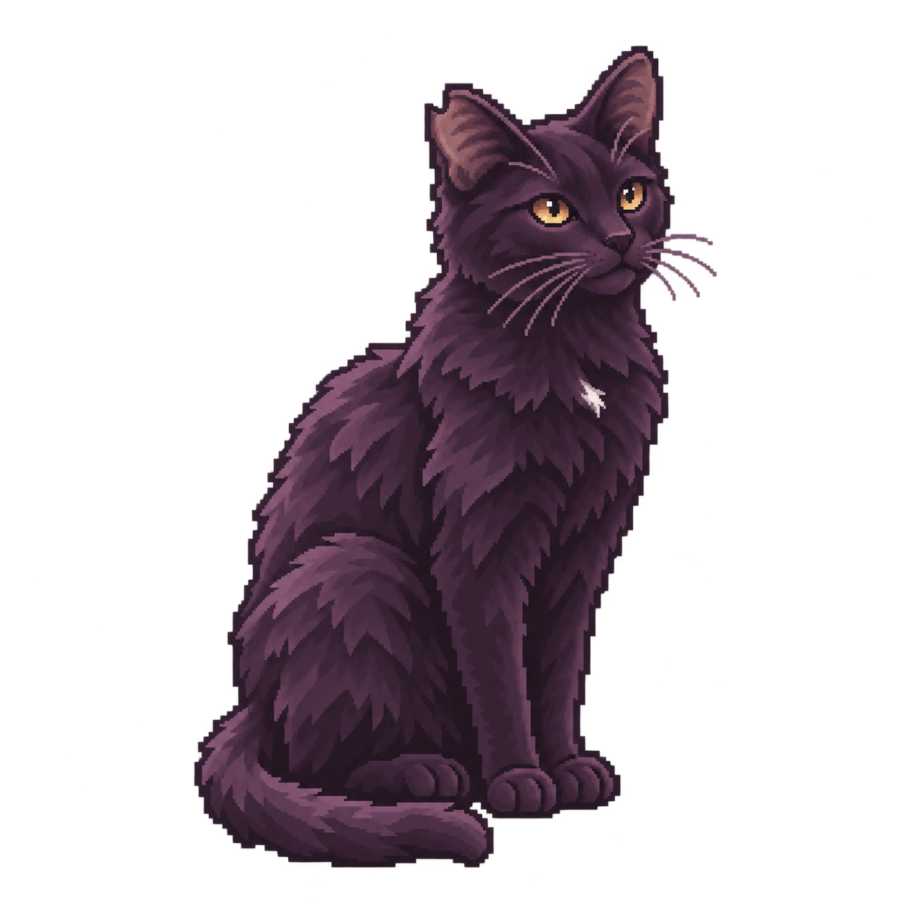
public/assets/archive/m00_normal_pre_pixel.png
C · 1254×1254 · 672 KB
SHA-256 326c0b3bb0d260ea…
직접 참조 False · 동적 경로 후보 False · 유사 후보 1
Perceptual similarity candidate; inspect full-size images and intended variant before deciding.
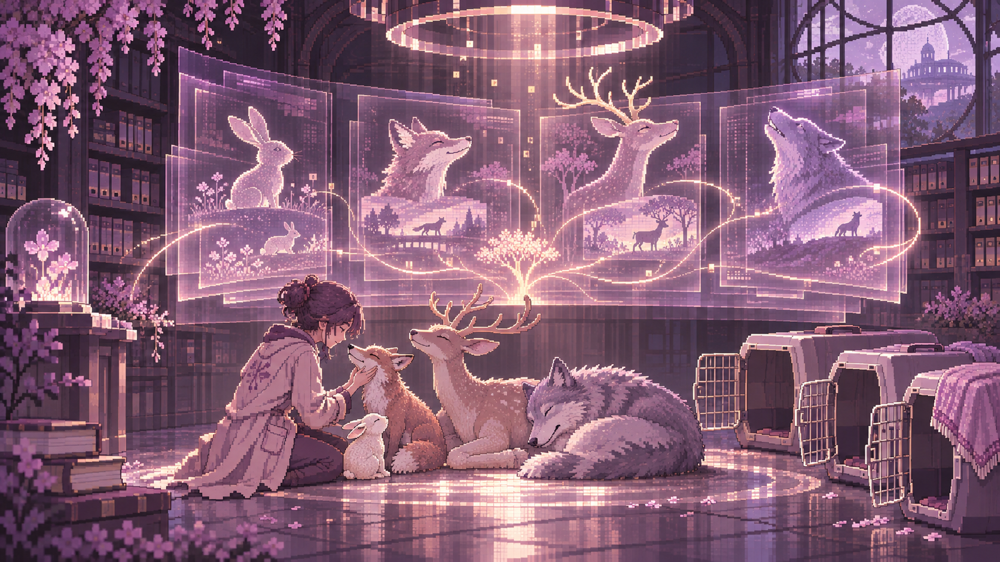
public/assets/archive/origin-zero-scenes/scene_ark_recall_legacy.png
E · 1672×941 · 2388 KB
SHA-256 0ed01a5007e79bfa…
직접 참조 False · 동적 경로 후보 False · 유사 후보 0
No static code reference found; verify runtime, CSS, save compatibility, and archive role.

public/assets/archive/origin-zero-scenes/scene_farewell_legacy.png
E · 1672×941 · 3157 KB
SHA-256 71cd924c9f1ac2f5…
직접 참조 False · 동적 경로 후보 False · 유사 후보 0
No static code reference found; verify runtime, CSS, save compatibility, and archive role.

public/assets/archive/origin-zero-scenes/scene_m00_positive_legacy.png
E · 1672×941 · 3327 KB
SHA-256 3bb767d24948db54…
직접 참조 False · 동적 경로 후보 False · 유사 후보 0
No static code reference found; verify runtime, CSS, save compatibility, and archive role.
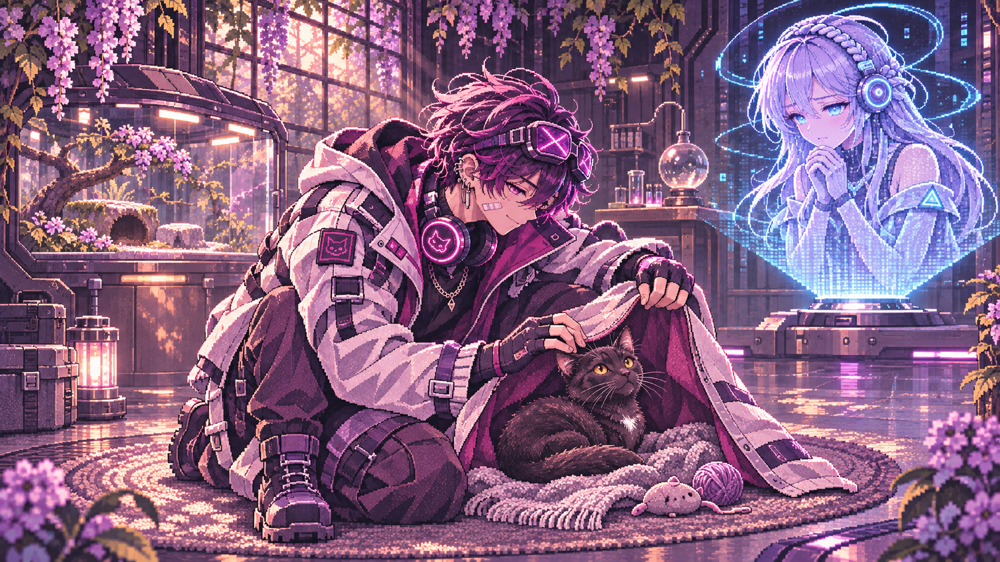
public/assets/archive/origin-zero-scenes/scene_m00_protect_legacy.png
E · 1672×941 · 3102 KB
SHA-256 8d28622f13e1980f…
직접 참조 False · 동적 경로 후보 False · 유사 후보 0
No static code reference found; verify runtime, CSS, save compatibility, and archive role.
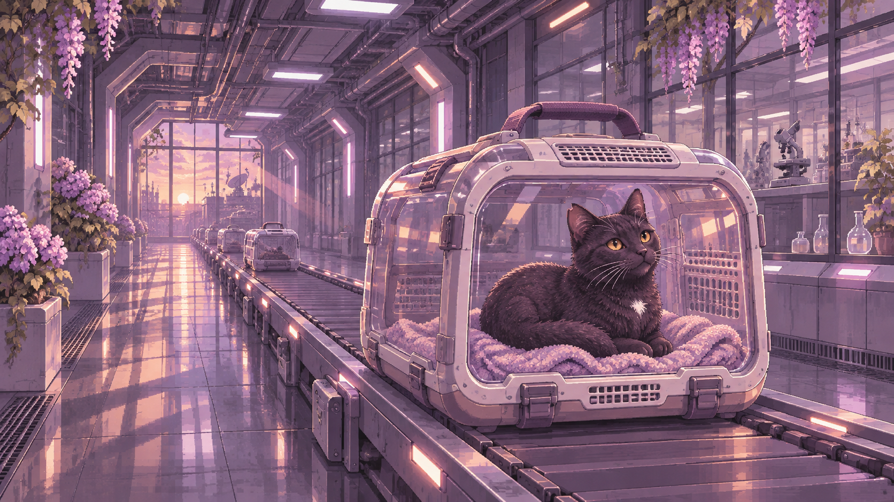
public/assets/archive/origin-zero-scenes/scene_m00_transfer_legacy.png
E · 1672×941 · 2602 KB
SHA-256 baf0c4733afce7c0…
직접 참조 False · 동적 경로 후보 False · 유사 후보 0
No static code reference found; verify runtime, CSS, save compatibility, and archive role.
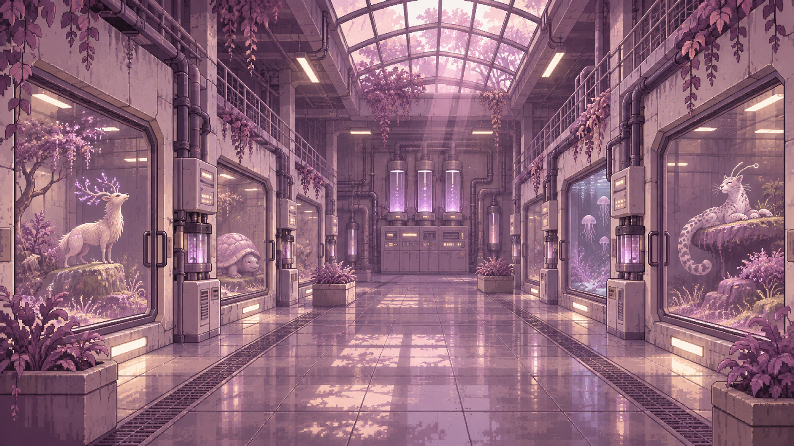
public/assets/backgrounds/bg_containment.png
A · 1672×941 · 2683 KB
SHA-256 aaa6d03e39c524e1…
직접 참조 True · 동적 경로 후보 False · 유사 후보 0
Referenced asset; keep unless an intentional replacement is reviewed.
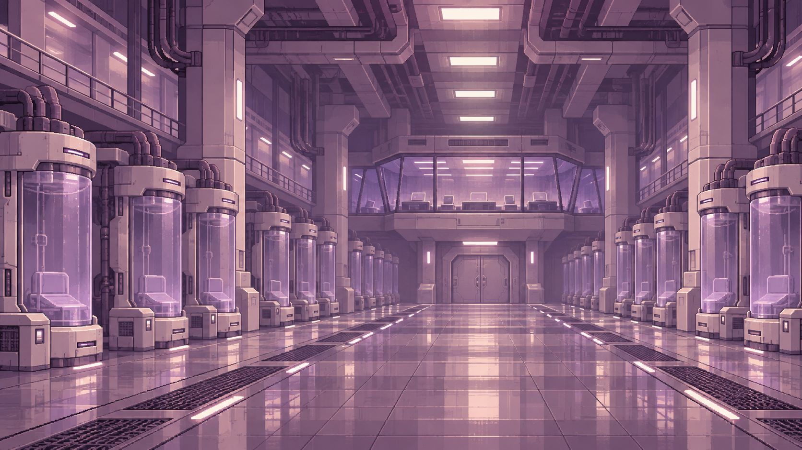
public/assets/backgrounds/bg_headquarters.png
A · 1672×941 · 2129 KB
SHA-256 a602b9debb582b56…
직접 참조 True · 동적 경로 후보 False · 유사 후보 0
Referenced asset; keep unless an intentional replacement is reviewed.

public/assets/backgrounds/bg_origin_lab.png
A · 1672×941 · 3618 KB
SHA-256 ada93d1eddf80a24…
직접 참조 True · 동적 경로 후보 False · 유사 후보 0
Referenced asset; keep unless an intentional replacement is reviewed.
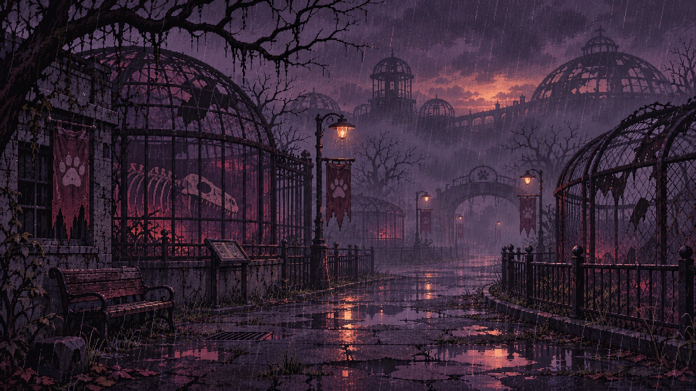
public/assets/backgrounds/dawn.webp
F · 1672×941 · 544 KB
SHA-256 b8eae90930601f44…
직접 참조 False · 동적 경로 후보 True · 유사 후보 0
Possible dynamically assembled path; inspect runtime path construction.
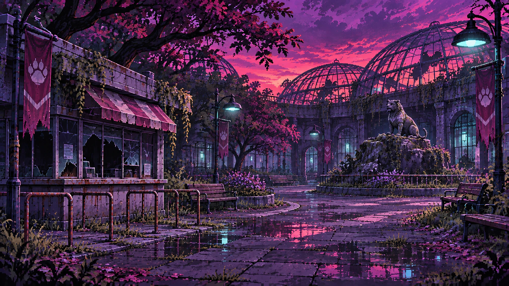
public/assets/backgrounds/gate.webp
A · 1672×941 · 600 KB
SHA-256 e96816b270efe295…
직접 참조 True · 동적 경로 후보 False · 유사 후보 0
Referenced asset; keep unless an intentional replacement is reviewed.

public/assets/backgrounds/hero-gate.webp
A · 1221×468 · 163 KB
SHA-256 f31c95bf7d6933fa…
직접 참조 True · 동적 경로 후보 False · 유사 후보 0
Referenced asset; keep unless an intentional replacement is reviewed.
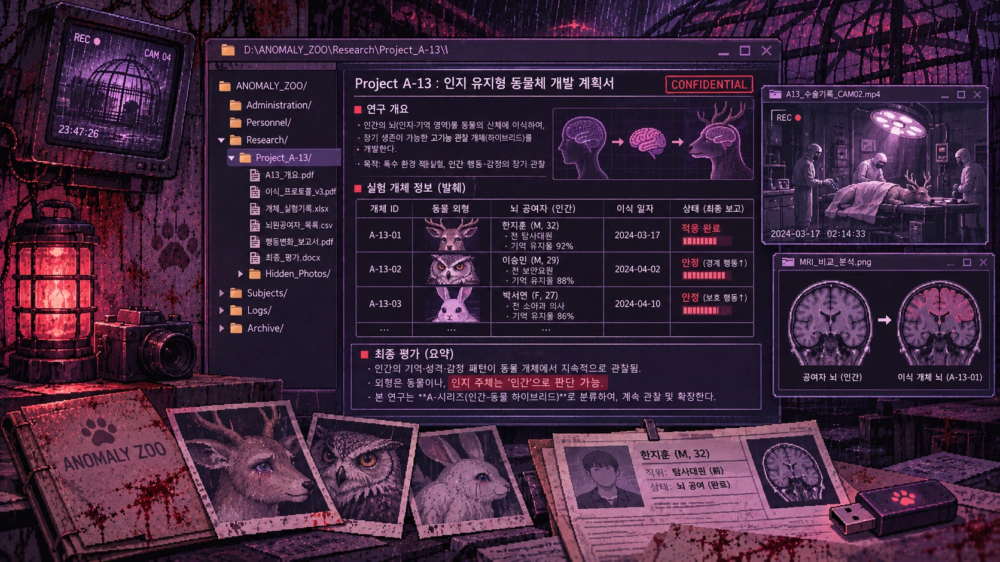
public/assets/backgrounds/hidden-photo.webp
F · 1672×941 · 519 KB
SHA-256 4794402eb883b5dc…
직접 참조 False · 동적 경로 후보 True · 유사 후보 0
Possible dynamically assembled path; inspect runtime path construction.
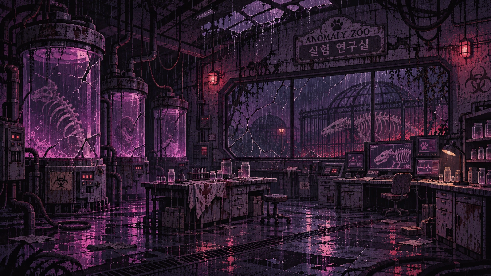
public/assets/backgrounds/laboratory.webp
A · 1672×941 · 570 KB
SHA-256 bc48324e9446c94c…
직접 참조 True · 동적 경로 후보 False · 유사 후보 0
Referenced asset; keep unless an intentional replacement is reviewed.

public/assets/backgrounds/sanctuary.webp
F · 1672×941 · 614 KB
SHA-256 964f5547b1c632ba…
직접 참조 False · 동적 경로 후보 True · 유사 후보 0
Possible dynamically assembled path; inspect runtime path construction.

public/assets/backgrounds/wasteland.webp
F · 1672×941 · 618 KB
SHA-256 8a4bce72d5149df8…
직접 참조 False · 동적 경로 후보 True · 유사 후보 0
Possible dynamically assembled path; inspect runtime path construction.
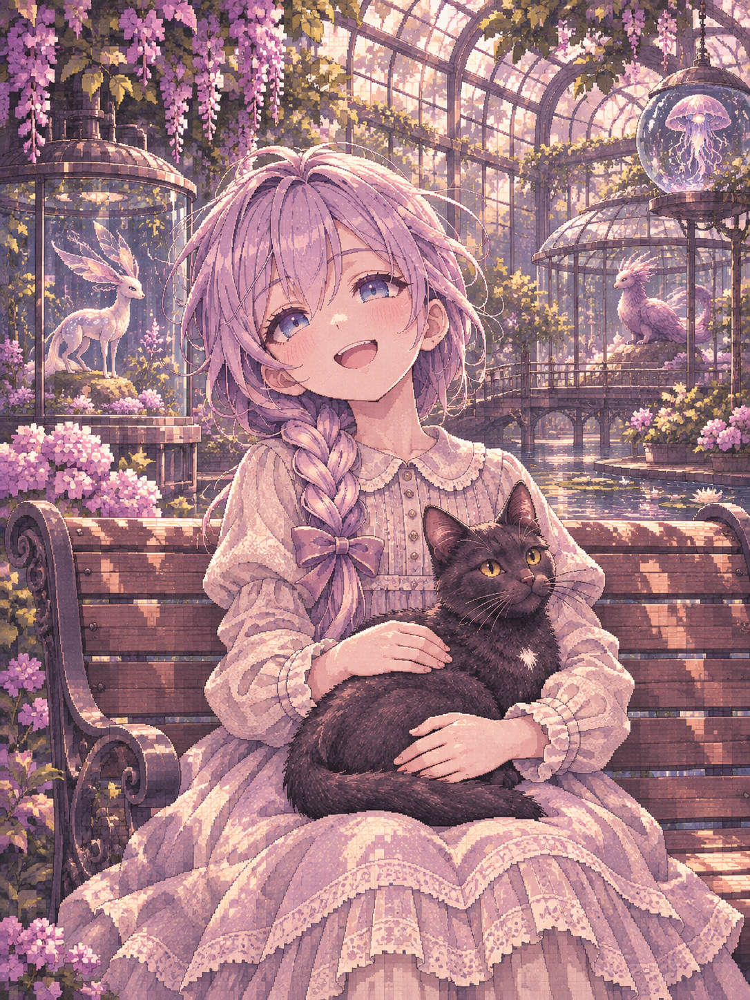
public/assets/characters/daughter_portrait.png
A · 1086×1448 · 3384 KB
SHA-256 1beb8367078e5d39…
직접 참조 True · 동적 경로 후보 False · 유사 후보 0
Referenced asset; keep unless an intentional replacement is reviewed.
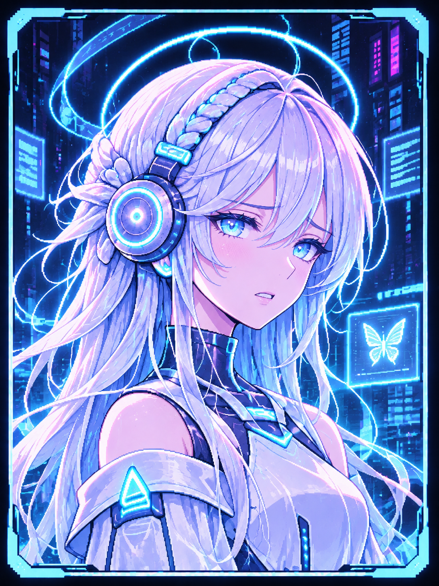
public/assets/characters/eve_anxious.png
C · 1086×1448 · 2394 KB
SHA-256 199e39a739723162…
직접 참조 False · 동적 경로 후보 False · 유사 후보 3
Perceptual similarity candidate; inspect full-size images and intended variant before deciding.
public/assets/characters/eve_critical.png
C · 1086×1448 · 2513 KB
SHA-256 dcdb34bd67e2846f…
직접 참조 False · 동적 경로 후보 False · 유사 후보 3
Perceptual similarity candidate; inspect full-size images and intended variant before deciding.
public/assets/characters/eve_glitch.png
E · 1086×1448 · 2908 KB
SHA-256 e4b407e28311798b…
직접 참조 False · 동적 경로 후보 False · 유사 후보 0
No static code reference found; verify runtime, CSS, save compatibility, and archive role.

public/assets/characters/eve_hologram.webp
A · 768×1024 · 281 KB
SHA-256 4fb795b1cbb89840…
직접 참조 True · 동적 경로 후보 False · 유사 후보 3
Referenced asset; keep unless an intentional replacement is reviewed.
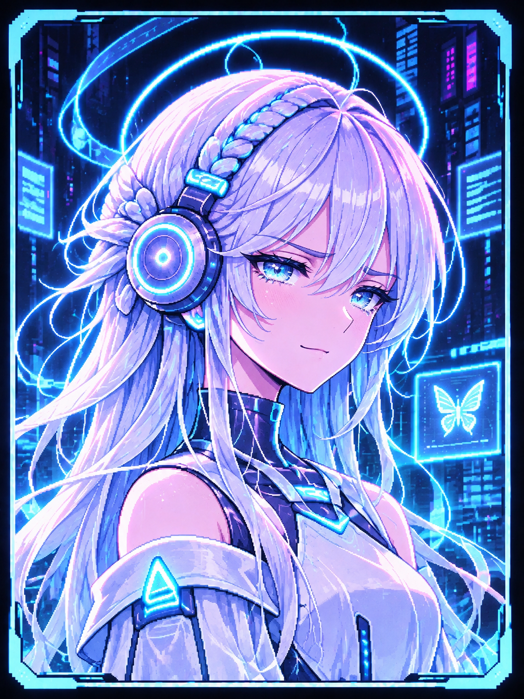
public/assets/characters/eve_resolve.png
C · 1086×1448 · 2422 KB
SHA-256 13c96a89e3b4fc33…
직접 참조 False · 동적 경로 후보 False · 유사 후보 3
Perceptual similarity candidate; inspect full-size images and intended variant before deciding.
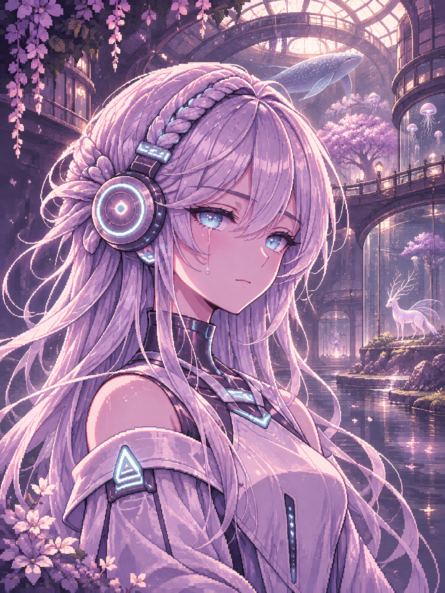
public/assets/characters/eve_revelation.png
E · 1086×1448 · 2835 KB
SHA-256 376b39817ef67c9e…
직접 참조 False · 동적 경로 후보 False · 유사 후보 0
No static code reference found; verify runtime, CSS, save compatibility, and archive role.
public/assets/characters/protagonist_anxious.png
C · 768×1024 · 1800 KB
SHA-256 e10f4cab62e8c84e…
직접 참조 False · 동적 경로 후보 False · 유사 후보 7
Perceptual similarity candidate; inspect full-size images and intended variant before deciding.
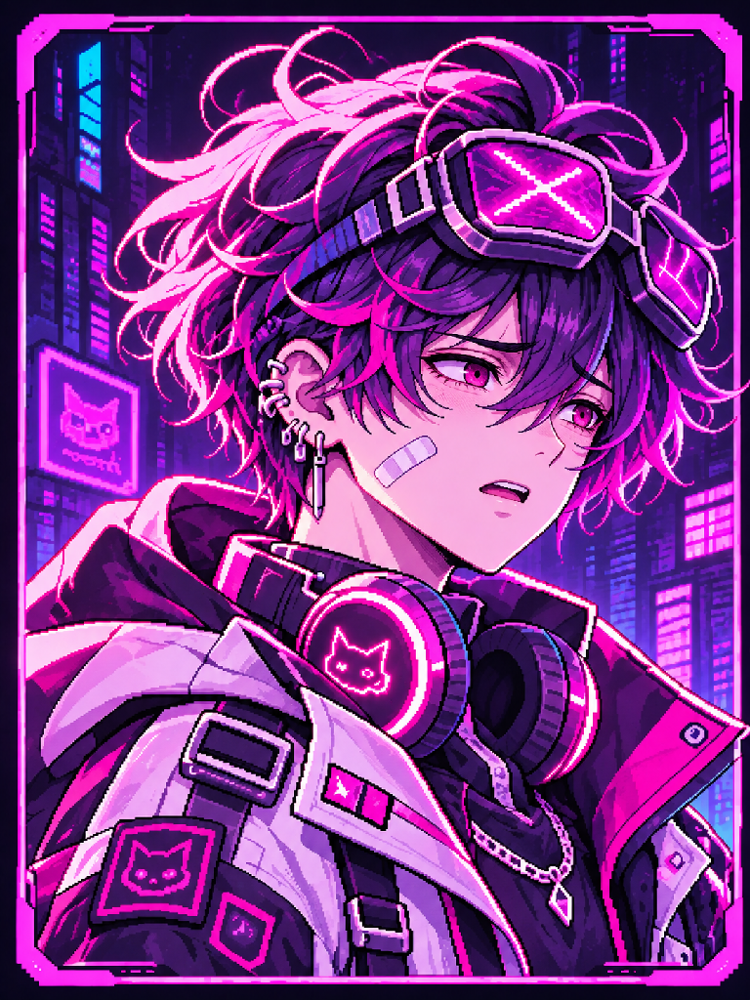
public/assets/characters/protagonist_anxious_v73_768.png
C · 768×1024 · 1900 KB
SHA-256 62a11d80ba2944df…
직접 참조 False · 동적 경로 후보 False · 유사 후보 4
Perceptual similarity candidate; inspect full-size images and intended variant before deciding.
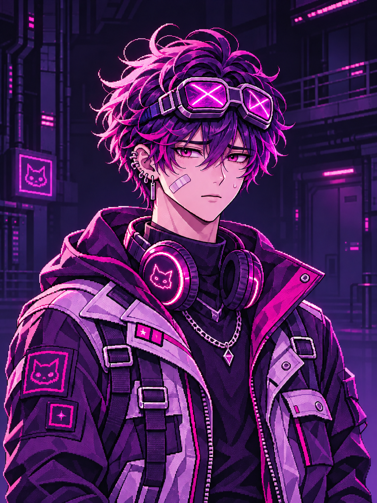
public/assets/characters/protagonist_anxious_v74_source.png
C · 1086×1448 · 2263 KB
SHA-256 19d9a5cc68922448…
직접 참조 False · 동적 경로 후보 False · 유사 후보 7
Perceptual similarity candidate; inspect full-size images and intended variant before deciding.
public/assets/characters/protagonist_critical.png
C · 768×1024 · 1821 KB
SHA-256 59f278daf2132380…
직접 참조 False · 동적 경로 후보 False · 유사 후보 7
Perceptual similarity candidate; inspect full-size images and intended variant before deciding.
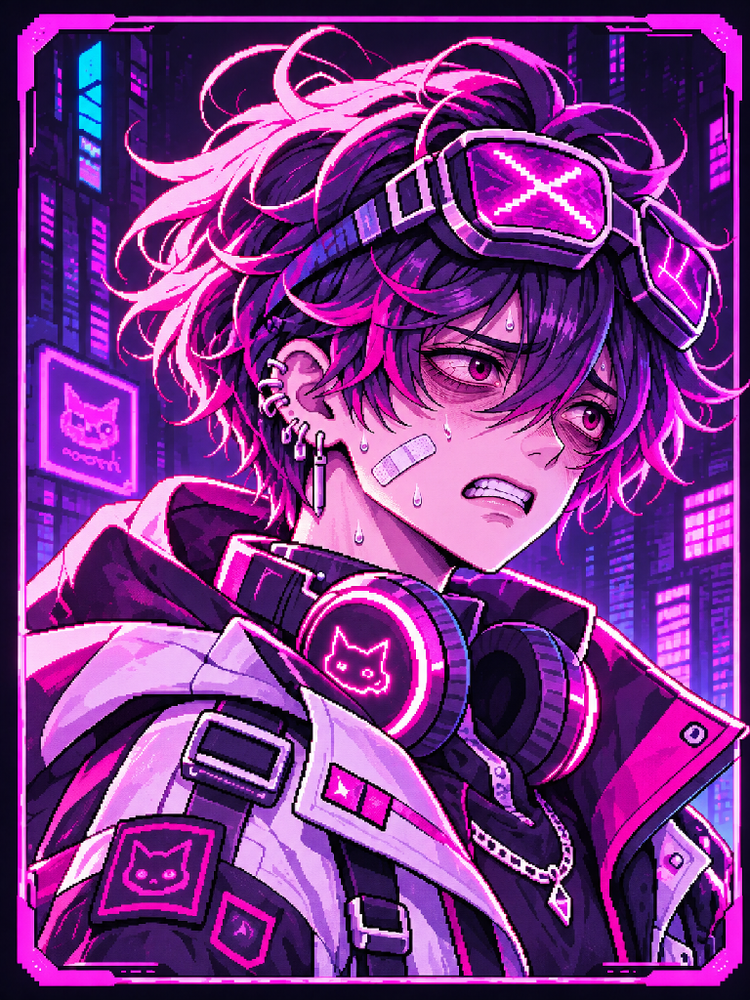
public/assets/characters/protagonist_critical_v73_768.png
C · 768×1024 · 1986 KB
SHA-256 2fcbe12033205c74…
직접 참조 False · 동적 경로 후보 False · 유사 후보 4
Perceptual similarity candidate; inspect full-size images and intended variant before deciding.
public/assets/characters/protagonist_critical_v74_source.png
C · 1086×1448 · 2295 KB
SHA-256 082e86eea3f63201…
직접 참조 False · 동적 경로 후보 False · 유사 후보 7
Perceptual similarity candidate; inspect full-size images and intended variant before deciding.
public/assets/characters/protagonist_decline.png
E · 1086×1448 · 2828 KB
SHA-256 da4570c1c43d92d6…
직접 참조 False · 동적 경로 후보 False · 유사 후보 0
No static code reference found; verify runtime, CSS, save compatibility, and archive role.
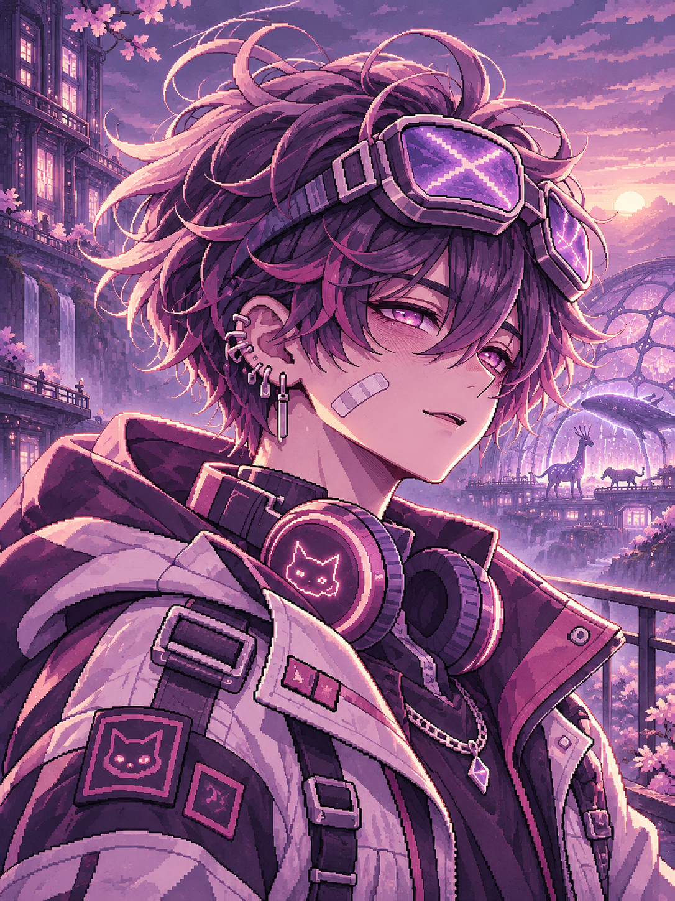
public/assets/characters/protagonist_final.png
E · 1086×1448 · 2955 KB
SHA-256 013a94542a7f54fd…
직접 참조 False · 동적 경로 후보 False · 유사 후보 0
No static code reference found; verify runtime, CSS, save compatibility, and archive role.

public/assets/characters/protagonist_neutral.png
A · 768×1024 · 1812 KB
SHA-256 81c588d82095594e…
직접 참조 True · 동적 경로 후보 False · 유사 후보 7
Referenced asset; keep unless an intentional replacement is reviewed.
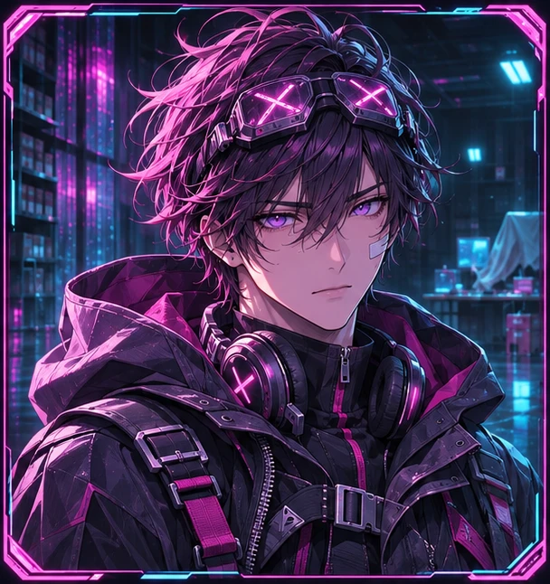
public/assets/characters/protagonist_neutral.webp
C · 768×1024 · 271 KB
SHA-256 6418777448b990a0…
직접 참조 False · 동적 경로 후보 True · 유사 후보 4
Perceptual similarity candidate; inspect full-size images and intended variant before deciding.
public/assets/characters/protagonist_neutral_v73_768.png
C · 768×1024 · 1947 KB
SHA-256 a052e6d7d14576fc…
직접 참조 False · 동적 경로 후보 False · 유사 후보 4
Perceptual similarity candidate; inspect full-size images and intended variant before deciding.
public/assets/characters/protagonist_neutral_v74_source.png
C · 1086×1448 · 2334 KB
SHA-256 f7784a9a7ab363c6…
직접 참조 False · 동적 경로 후보 False · 유사 후보 7
Perceptual similarity candidate; inspect full-size images and intended variant before deciding.
public/assets/characters/protagonist_resolve.png
C · 768×1024 · 1826 KB
SHA-256 00c7f1f846af84da…
직접 참조 False · 동적 경로 후보 False · 유사 후보 7
Perceptual similarity candidate; inspect full-size images and intended variant before deciding.
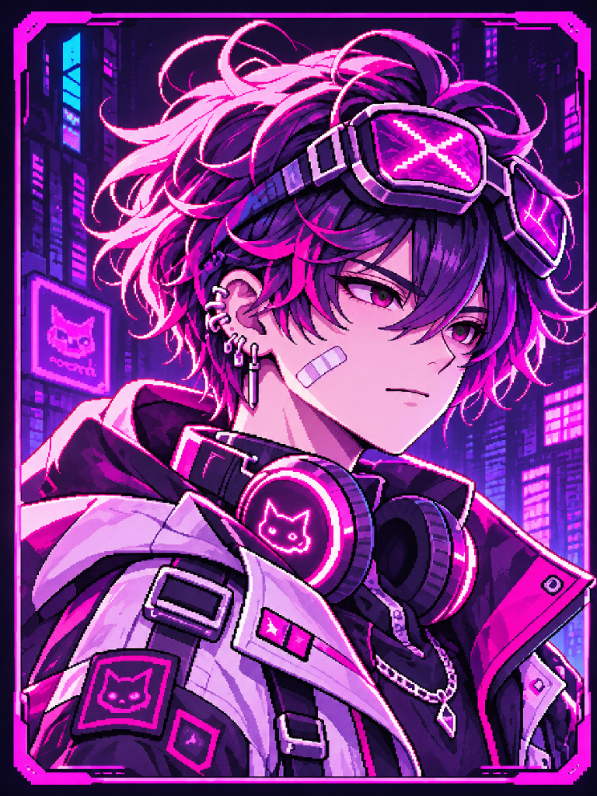
public/assets/characters/protagonist_resolve_v73_768.png
C · 768×1024 · 1946 KB
SHA-256 ee666ab99b1998f7…
직접 참조 False · 동적 경로 후보 False · 유사 후보 4
Perceptual similarity candidate; inspect full-size images and intended variant before deciding.
public/assets/characters/protagonist_resolve_v74_source.png
C · 1086×1448 · 2319 KB
SHA-256 9ffb00a6307c70ef…
직접 참조 False · 동적 경로 후보 False · 유사 후보 7
Perceptual similarity candidate; inspect full-size images and intended variant before deciding.
public/assets/characters/scientist_archive.png
A · 1086×1448 · 3247 KB
SHA-256 5ebd4bec503525ab…
직접 참조 True · 동적 경로 후보 False · 유사 후보 0
Referenced asset; keep unless an intentional replacement is reviewed.
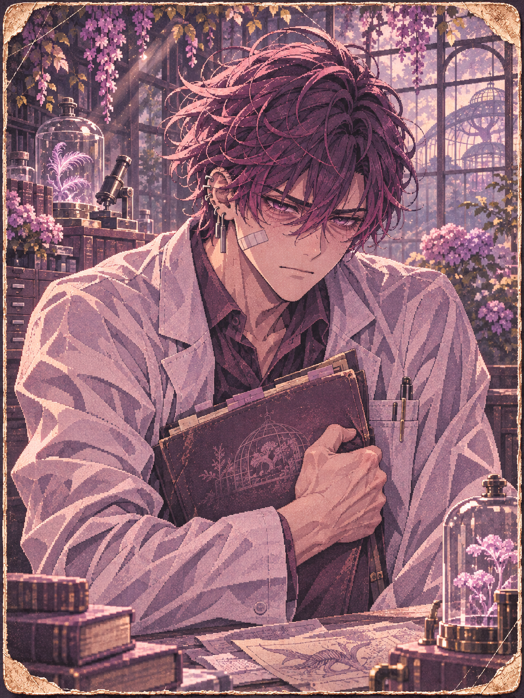
public/assets/characters/scientist_obsession.png
A · 1086×1448 · 3245 KB
SHA-256 53fb80cbb07d5614…
직접 참조 True · 동적 경로 후보 False · 유사 후보 0
Referenced asset; keep unless an intentional replacement is reviewed.
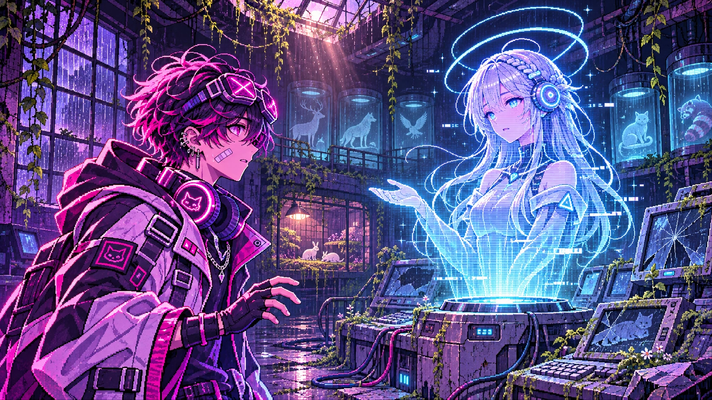
public/assets/cinematics/eve-first-meeting/scene.webp
A · 1672×941 · 746 KB
SHA-256 a784f5f9e69f5c2d…
직접 참조 True · 동적 경로 후보 False · 유사 후보 0
Referenced asset; keep unless an intentional replacement is reviewed.
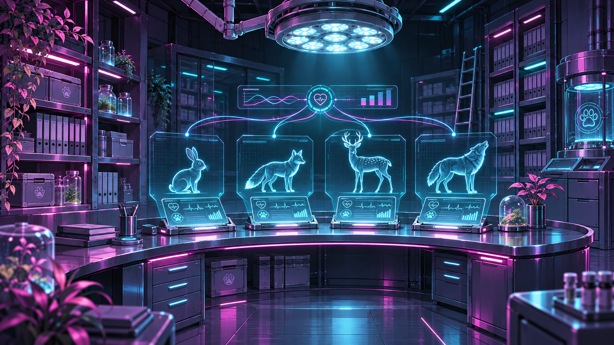
public/assets/cinematics/origin-zero/scene_ark_recall.png
A · 1672×941 · 2298 KB
SHA-256 76585f4b8a8016b8…
직접 참조 True · 동적 경로 후보 False · 유사 후보 0
Referenced asset; keep unless an intentional replacement is reviewed.
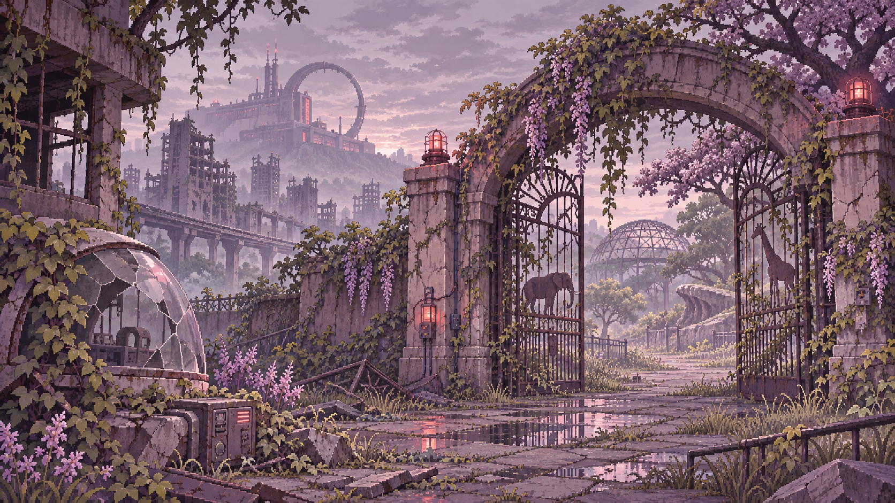
public/assets/cinematics/origin-zero/scene_collapse.png
A · 1672×941 · 3144 KB
SHA-256 e672514c7a403123…
직접 참조 True · 동적 경로 후보 False · 유사 후보 0
Referenced asset; keep unless an intentional replacement is reviewed.
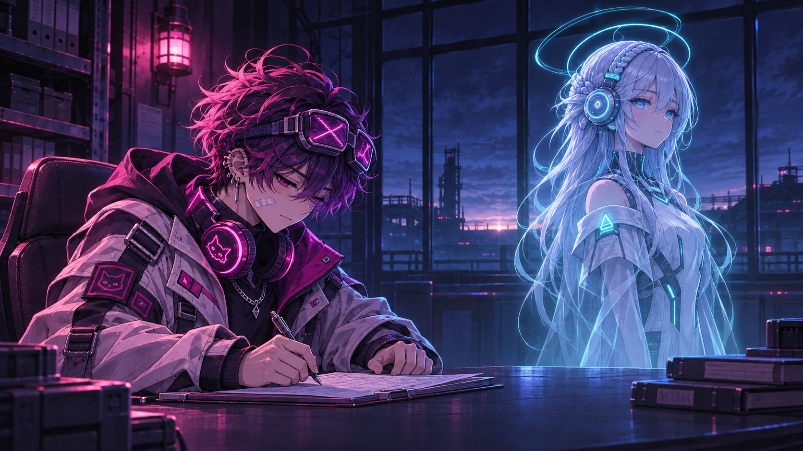
public/assets/cinematics/origin-zero/scene_farewell.png
E · 1672×941 · 2335 KB
SHA-256 6f2cc403e021f676…
직접 참조 False · 동적 경로 후보 False · 유사 후보 0
No static code reference found; verify runtime, CSS, save compatibility, and archive role.
public/assets/cinematics/origin-zero/scene_m00_positive.png
A · 1672×941 · 2498 KB
SHA-256 f8028433133d8749…
직접 참조 True · 동적 경로 후보 False · 유사 후보 0
Referenced asset; keep unless an intentional replacement is reviewed.
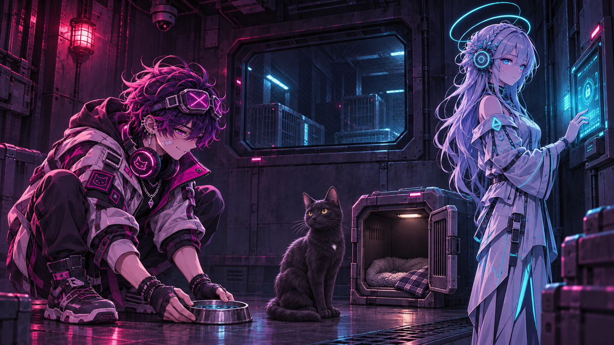
public/assets/cinematics/origin-zero/scene_m00_protect.png
E · 1672×941 · 2531 KB
SHA-256 b1dd97ffc4293646…
직접 참조 False · 동적 경로 후보 False · 유사 후보 0
No static code reference found; verify runtime, CSS, save compatibility, and archive role.

public/assets/cinematics/origin-zero/scene_m00_transfer.png
E · 1672×941 · 2148 KB
SHA-256 a35a35120976c1d5…
직접 참조 False · 동적 경로 후보 False · 유사 후보 0
No static code reference found; verify runtime, CSS, save compatibility, and archive role.
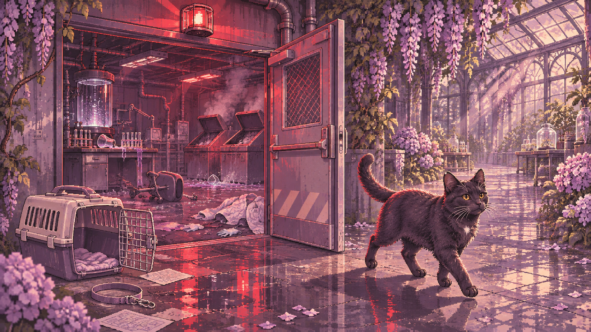
public/assets/cinematics/origin-zero/scene_origin_escape.png
A · 1672×941 · 3023 KB
SHA-256 8ebfee17040a1f23…
직접 참조 True · 동적 경로 후보 False · 유사 후보 0
Referenced asset; keep unless an intentional replacement is reviewed.
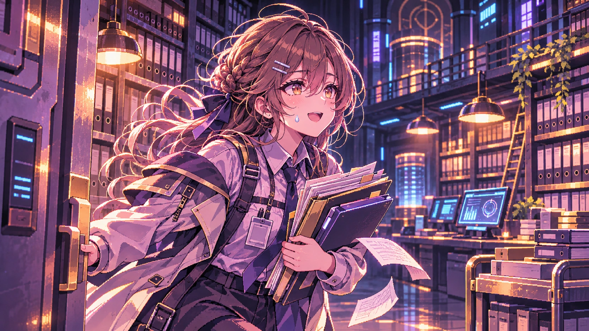
public/assets/cinematics/staff-arrivals/deer/scene.webp
A · 1672×941 · 492 KB
SHA-256 3df452ac6f58ab53…
직접 참조 True · 동적 경로 후보 False · 유사 후보 0
Referenced asset; keep unless an intentional replacement is reviewed.
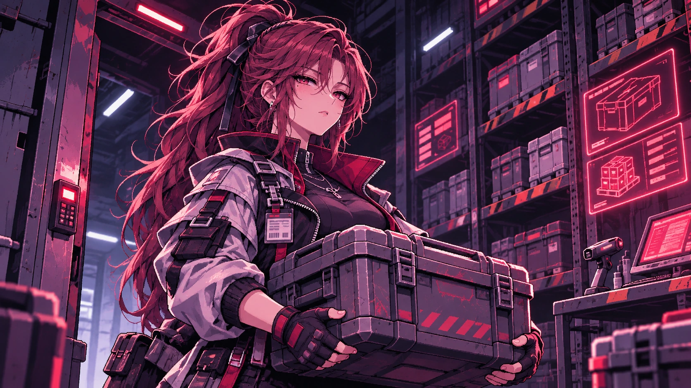
public/assets/cinematics/staff-arrivals/fox/scene.webp
A · 1672×941 · 427 KB
SHA-256 79848a588dae3c1e…
직접 참조 True · 동적 경로 후보 False · 유사 후보 0
Referenced asset; keep unless an intentional replacement is reviewed.
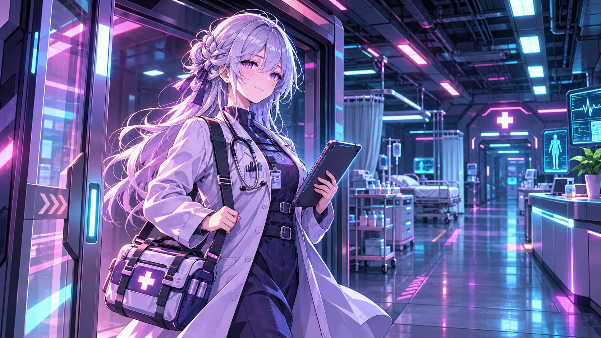
public/assets/cinematics/staff-arrivals/rabbit/scene.webp
A · 1672×941 · 409 KB
SHA-256 3f62a753be9268b1…
직접 참조 True · 동적 경로 후보 False · 유사 후보 0
Referenced asset; keep unless an intentional replacement is reviewed.
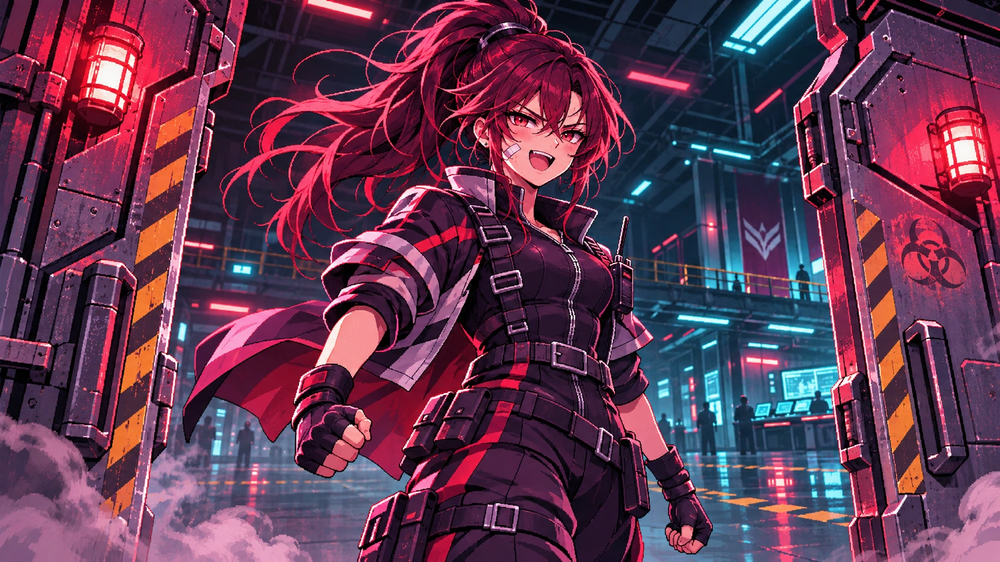
public/assets/cinematics/staff-arrivals/wolf/scene.webp
A · 1672×941 · 474 KB
SHA-256 2a09d57a66792af8…
직접 참조 True · 동적 경로 후보 False · 유사 후보 0
Referenced asset; keep unless an intentional replacement is reviewed.
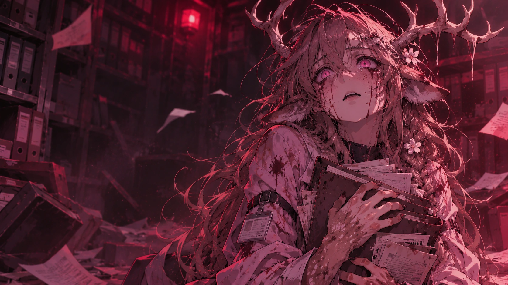
public/assets/cinematics/staff-terminations/deer/scene.webp
A · 1672×941 · 330 KB
SHA-256 e406716b21c9e9bb…
직접 참조 True · 동적 경로 후보 False · 유사 후보 0
Referenced asset; keep unless an intentional replacement is reviewed.

public/assets/cinematics/staff-terminations/fox/scene.webp
A · 1672×941 · 326 KB
SHA-256 dba9b59ffa3decb4…
직접 참조 True · 동적 경로 후보 False · 유사 후보 0
Referenced asset; keep unless an intentional replacement is reviewed.
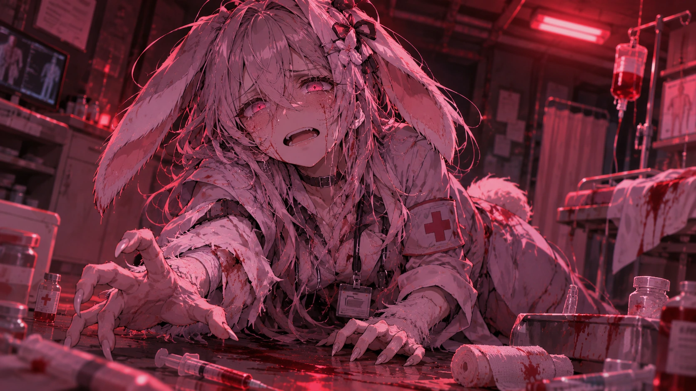
public/assets/cinematics/staff-terminations/rabbit/scene.webp
A · 1672×941 · 348 KB
SHA-256 b94632806f03515b…
직접 참조 True · 동적 경로 후보 False · 유사 후보 0
Referenced asset; keep unless an intentional replacement is reviewed.
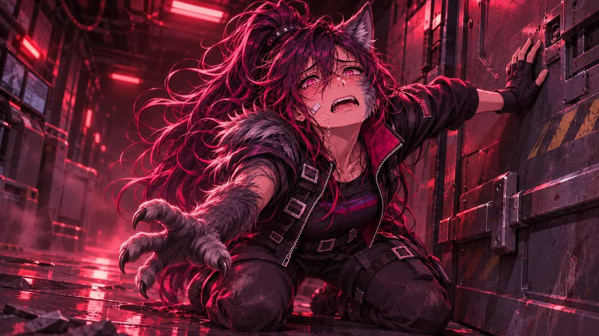
public/assets/cinematics/staff-terminations/wolf/scene.webp
A · 1672×941 · 524 KB
SHA-256 c7c38568f73d8dd0…
직접 참조 True · 동적 경로 후보 False · 유사 후보 0
Referenced asset; keep unless an intentional replacement is reviewed.

public/assets/endings/ending_eden_cinematic.png
A · 1672×941 · 3285 KB
SHA-256 06daef9419737cb4…
직접 참조 True · 동적 경로 후보 False · 유사 후보 0
Referenced asset; keep unless an intentional replacement is reviewed.
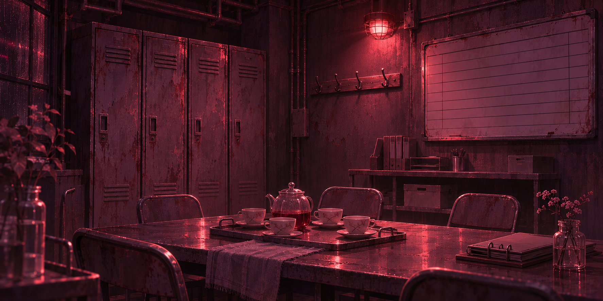
public/assets/endings/ending_empty_shiftroom_cinematic.png
A · 1774×887 · 2228 KB
SHA-256 d333e6429160c9e6…
직접 참조 True · 동적 경로 후보 False · 유사 후보 0
Referenced asset; keep unless an intentional replacement is reviewed.

public/assets/endings/ending_eternal_experiment_cinematic.png
A · 1816×866 · 2795 KB
SHA-256 63ba05533b46221b…
직접 참조 True · 동적 경로 후보 False · 유사 후보 0
Referenced asset; keep unless an intentional replacement is reviewed.
public/assets/endings/ending_final_transmission_cinematic.png
A · 1931×814 · 2311 KB
SHA-256 80f64148ed2eeee6…
직접 참조 True · 동적 경로 후보 False · 유사 후보 0
Referenced asset; keep unless an intentional replacement is reviewed.

public/assets/endings/ending_first_sentence_cinematic.png
A · 1774×887 · 2962 KB
SHA-256 1bbc9db8b1620551…
직접 참조 True · 동적 경로 후보 False · 유사 후보 0
Referenced asset; keep unless an intentional replacement is reviewed.

public/assets/endings/ending_humane_restoration_cinematic.png
A · 1920×819 · 2501 KB
SHA-256 a8d4f8e237a6a54a…
직접 참조 True · 동적 경로 후보 False · 유사 후보 0
Referenced asset; keep unless an intentional replacement is reviewed.
public/assets/endings/ending_incomplete_revival.webp
F · 1280×720 · 342 KB
SHA-256 0e40a395b164d09e…
직접 참조 False · 동적 경로 후보 True · 유사 후보 0
Possible dynamically assembled path; inspect runtime path construction.

public/assets/endings/ending_incomplete_revival_cinematic.png
A · 1832×859 · 2223 KB
SHA-256 2e45d21d6cf380fa…
직접 참조 True · 동적 경로 후보 False · 유사 후보 0
Referenced asset; keep unless an intentional replacement is reviewed.

public/assets/endings/ending_last_signal.webp
F · 1280×720 · 462 KB
SHA-256 36c5a9fb56a11b37…
직접 참조 False · 동적 경로 후보 True · 유사 후보 0
Possible dynamically assembled path; inspect runtime path construction.
public/assets/endings/ending_last_signal_cinematic.png
A · 1672×941 · 2343 KB
SHA-256 f52e2c177323b729…
직접 참조 True · 동적 경로 후보 False · 유사 후보 0
Referenced asset; keep unless an intentional replacement is reviewed.
public/assets/endings/ending_last_zoo_cinematic.png
A · 1671×941 · 3329 KB
SHA-256 fd4e64c6e1a180bc…
직접 참조 True · 동적 경로 후보 False · 유사 후보 0
Referenced asset; keep unless an intentional replacement is reviewed.

public/assets/endings/ending_late_gate_cinematic.png
A · 1672×941 · 2747 KB
SHA-256 933fb9c497bee7b0…
직접 참조 True · 동적 경로 후보 False · 유사 후보 0
Referenced asset; keep unless an intentional replacement is reviewed.
public/assets/endings/ending_new_consciousness.webp
E · 1280×720 · 450 KB
SHA-256 6a621623df4ee268…
직접 참조 False · 동적 경로 후보 False · 유사 후보 0
No static code reference found; verify runtime, CSS, save compatibility, and archive role.
public/assets/endings/ending_open_spring.webp
E · 1280×720 · 436 KB
SHA-256 d92c1b1e0fb3c7a1…
직접 참조 False · 동적 경로 후보 False · 유사 후보 0
No static code reference found; verify runtime, CSS, save compatibility, and archive role.

public/assets/endings/ending_quiet_automation_cinematic.png
A · 1931×814 · 2402 KB
SHA-256 aab8c2d5ea079422…
직접 참조 True · 동적 경로 후보 False · 유사 후보 0
Referenced asset; keep unless an intentional replacement is reviewed.
public/assets/endings/ending_scattered_names.webp
F · 1280×720 · 384 KB
SHA-256 f62a1df87e841655…
직접 참조 False · 동적 경로 후보 True · 유사 후보 0
Possible dynamically assembled path; inspect runtime path construction.

public/assets/endings/ending_scattered_names_cinematic.png
A · 1672×941 · 2504 KB
SHA-256 e0f62299e7c4c5e9…
직접 참조 True · 동적 경로 후보 False · 유사 후보 0
Referenced asset; keep unless an intentional replacement is reviewed.
public/assets/endings/ending_seed_ark.png
F · 1672×941 · 2608 KB
SHA-256 ebea9b309117c59d…
직접 참조 False · 동적 경로 후보 True · 유사 후보 0
Possible dynamically assembled path; inspect runtime path construction.

public/assets/endings/ending_seed_ark_cinematic.png
A · 1672×941 · 2849 KB
SHA-256 27a496f7167e8836…
직접 참조 True · 동적 경로 후보 False · 유사 후보 0
Referenced asset; keep unless an intentional replacement is reviewed.
public/assets/endings/ending_silent_automation.webp
F · 1280×720 · 416 KB
SHA-256 f2140ab77552122f…
직접 참조 False · 동적 경로 후보 True · 유사 후보 0
Possible dynamically assembled path; inspect runtime path construction.

public/assets/endings/ending_silent_automation_cinematic.png
A · 1672×941 · 2615 KB
SHA-256 8d1da1e6c14570ff…
직접 참조 True · 동적 경로 후보 False · 유사 후보 0
Referenced asset; keep unless an intentional replacement is reviewed.

public/assets/endings/ending_spring_beyond_cage_cinematic.png
A · 1671×941 · 2935 KB
SHA-256 3e545583de89787b…
직접 참조 True · 동적 경로 후보 False · 유사 후보 0
Referenced asset; keep unless an intentional replacement is reviewed.
public/assets/endings/ending_spring_outside_records_cinematic.png
A · 1774×887 · 3481 KB
SHA-256 91925ca169d7070b…
직접 참조 True · 동적 경로 후보 False · 유사 후보 0
Referenced asset; keep unless an intentional replacement is reviewed.
public/assets/endings/ending_subject_000.webp
F · 1280×720 · 371 KB
SHA-256 9c89ecb8af3cda8f…
직접 참조 False · 동적 경로 후보 True · 유사 후보 0
Possible dynamically assembled path; inspect runtime path construction.

public/assets/endings/ending_subject_000_cinematic.png
A · 1672×941 · 2534 KB
SHA-256 6de0b66b8662a404…
직접 참조 True · 동적 경로 후보 False · 유사 후보 0
Referenced asset; keep unless an intentional replacement is reviewed.
public/assets/endings/ending_successor_cinematic.png
A · 1920×819 · 2607 KB
SHA-256 bc49793c9dad265a…
직접 참조 True · 동적 경로 후보 False · 유사 후보 0
Referenced asset; keep unless an intentional replacement is reviewed.
public/assets/endings/ending_two_caretakers.webp
F · 1280×720 · 466 KB
SHA-256 c58bd18e198b2faa…
직접 참조 False · 동적 경로 후보 True · 유사 후보 0
Possible dynamically assembled path; inspect runtime path construction.
public/assets/endings/ending_two_caretakers_cinematic.png
A · 1870×841 · 2903 KB
SHA-256 2ab21462b13fcbad…
직접 참조 True · 동적 경로 후보 False · 유사 후보 0
Referenced asset; keep unless an intentional replacement is reviewed.
public/assets/events/event_blackout.png
A · 1536×1024 · 2830 KB
SHA-256 09c7bdc0079efb35…
직접 참조 True · 동적 경로 후보 False · 유사 후보 0
Referenced asset; keep unless an intentional replacement is reviewed.
public/assets/events/event_containment.png
A · 1536×1024 · 3236 KB
SHA-256 d8aee94aa466a5d1…
직접 참조 True · 동적 경로 후보 False · 유사 후보 0
Referenced asset; keep unless an intentional replacement is reviewed.
public/assets/events/event_coolant.png
A · 1536×1024 · 3422 KB
SHA-256 173d448d58d7db12…
직접 참조 True · 동적 경로 후보 False · 유사 후보 0
Referenced asset; keep unless an intentional replacement is reviewed.
public/assets/events/event_garden.png
A · 1536×1024 · 3235 KB
SHA-256 62a325a43b71568b…
직접 참조 True · 동적 경로 후보 False · 유사 후보 0
Referenced asset; keep unless an intentional replacement is reviewed.
public/assets/events/event_signal.png
A · 1536×1024 · 3055 KB
SHA-256 690afa55173d2e7a…
직접 참조 True · 동적 경로 후보 False · 유사 후보 0
Referenced asset; keep unless an intentional replacement is reviewed.
public/assets/events/event_spores.png
A · 1536×1024 · 3431 KB
SHA-256 c65f566d9beae95b…
직접 참조 True · 동적 경로 후보 False · 유사 후보 0
Referenced asset; keep unless an intentional replacement is reviewed.
public/assets/events/m00_suspected_origin.png
A · 1672×941 · 2184 KB
SHA-256 8996b39cd742a2b0…
직접 참조 True · 동적 경로 후보 False · 유사 후보 0
Referenced asset; keep unless an intentional replacement is reviewed.
public/assets/field/enemy_echo.png
E · 1254×1254 · 815 KB
SHA-256 8dc2fb8d5621eaf5…
직접 참조 False · 동적 경로 후보 False · 유사 후보 0
No static code reference found; verify runtime, CSS, save compatibility, and archive role.
public/assets/field/enemy_slime.png
E · 1254×1254 · 685 KB
SHA-256 07037ac5cbaedd20…
직접 참조 False · 동적 경로 후보 False · 유사 후보 0
No static code reference found; verify runtime, CSS, save compatibility, and archive role.
public/assets/field/grass.png
A · 1536×1024 · 1297 KB
SHA-256 f0f998307cf17186…
직접 참조 True · 동적 경로 후보 False · 유사 후보 0
Referenced asset; keep unless an intentional replacement is reviewed.
public/assets/field/ground.png
A · 1254×1254 · 1460 KB
SHA-256 380c24f992b4835c…
직접 참조 True · 동적 경로 후보 False · 유사 후보 0
Referenced asset; keep unless an intentional replacement is reviewed.
public/assets/field/ranger.png
F · 1086×1448 · 628 KB
SHA-256 2201727f856ff2da…
직접 참조 False · 동적 경로 후보 True · 유사 후보 0
Possible dynamically assembled path; inspect runtime path construction.
public/assets/field/ranger_walk.png
A · 1254×1254 · 1322 KB
SHA-256 8ceaaef7d4864cc9…
직접 참조 True · 동적 경로 후보 False · 유사 후보 0
Referenced asset; keep unless an intentional replacement is reviewed.

public/assets/field/world_ground.png
A · 1536×1024 · 2883 KB
SHA-256 95353fd736f97248…
직접 참조 True · 동적 경로 후보 False · 유사 후보 0
Referenced asset; keep unless an intentional replacement is reviewed.
public/assets/hidden-photos/photo_01.png
E · 1448×1086 · 3242 KB
SHA-256 c45fc365f26a6023…
직접 참조 False · 동적 경로 후보 False · 유사 후보 0
No static code reference found; verify runtime, CSS, save compatibility, and archive role.
public/assets/hidden-photos/photo_02.png
E · 1448×1086 · 3072 KB
SHA-256 2ac0e02b578c2d25…
직접 참조 False · 동적 경로 후보 False · 유사 후보 0
No static code reference found; verify runtime, CSS, save compatibility, and archive role.
public/assets/hidden-photos/photo_03.png
E · 1448×1086 · 3034 KB
SHA-256 f92e1dcac138e9bf…
직접 참조 False · 동적 경로 후보 False · 유사 후보 0
No static code reference found; verify runtime, CSS, save compatibility, and archive role.
public/assets/hidden-photos/photo_04.png
E · 1448×1086 · 3171 KB
SHA-256 1e826165af526117…
직접 참조 False · 동적 경로 후보 False · 유사 후보 0
No static code reference found; verify runtime, CSS, save compatibility, and archive role.
public/assets/hidden-photos/photo_05.png
E · 1448×1086 · 3184 KB
SHA-256 4547d202a8446f25…
직접 참조 False · 동적 경로 후보 False · 유사 후보 0
No static code reference found; verify runtime, CSS, save compatibility, and archive role.
public/assets/hidden-photos/photo_06.png
E · 1448×1086 · 3319 KB
SHA-256 d8ed4b71e4b86fe8…
직접 참조 False · 동적 경로 후보 False · 유사 후보 0
No static code reference found; verify runtime, CSS, save compatibility, and archive role.
public/assets/hidden-photos/photo_07.png
E · 1448×1086 · 3095 KB
SHA-256 2f368a21404347a8…
직접 참조 False · 동적 경로 후보 False · 유사 후보 0
No static code reference found; verify runtime, CSS, save compatibility, and archive role.
public/assets/hidden-photos/photo_08.png
A · 1448×1086 · 3325 KB
SHA-256 f1c6312af58dc7ed…
직접 참조 True · 동적 경로 후보 False · 유사 후보 0
Referenced asset; keep unless an intentional replacement is reviewed.
public/assets/hidden-photos/photo_09.png
E · 1448×1086 · 3297 KB
SHA-256 d86301306bbeb489…
직접 참조 False · 동적 경로 후보 False · 유사 후보 0
No static code reference found; verify runtime, CSS, save compatibility, and archive role.
public/assets/hidden-photos/photo_10.png
E · 1448×1086 · 3113 KB
SHA-256 902952a468633498…
직접 참조 False · 동적 경로 후보 False · 유사 후보 0
No static code reference found; verify runtime, CSS, save compatibility, and archive role.
public/assets/hidden-photos/photo_11.png
E · 1448×1086 · 3385 KB
SHA-256 2726fad6446df88a…
직접 참조 False · 동적 경로 후보 False · 유사 후보 0
No static code reference found; verify runtime, CSS, save compatibility, and archive role.
public/assets/hidden-photos/photo_12.png
E · 1448×1086 · 3279 KB
SHA-256 962f2805ea5dcd49…
직접 참조 False · 동적 경로 후보 False · 유사 후보 0
No static code reference found; verify runtime, CSS, save compatibility, and archive role.
public/assets/staff/deer/portrait.webp
A · 1086×1448 · 410 KB
SHA-256 174176e9115d5e55…
직접 참조 True · 동적 경로 후보 False · 유사 후보 2
Referenced asset; keep unless an intentional replacement is reviewed.
public/assets/staff/deer/portrait_critical.png
C · 1086×1448 · 2504 KB
SHA-256 df8246ad38fac4e1…
직접 참조 False · 동적 경로 후보 False · 유사 후보 2
Perceptual similarity candidate; inspect full-size images and intended variant before deciding.
public/assets/staff/deer/portrait_critical.webp
E · 1086×1448 · 482 KB
SHA-256 2ea6ac9bc499298b…
직접 참조 False · 동적 경로 후보 False · 유사 후보 0
No static code reference found; verify runtime, CSS, save compatibility, and archive role.
public/assets/staff/deer/portrait_unstable.png
C · 1086×1448 · 2407 KB
SHA-256 6b0d4d065156e1c6…
직접 참조 False · 동적 경로 후보 False · 유사 후보 2
Perceptual similarity candidate; inspect full-size images and intended variant before deciding.
public/assets/staff/deer/portrait_unstable.webp
E · 1086×1448 · 439 KB
SHA-256 820fa18a458bd121…
직접 참조 False · 동적 경로 후보 False · 유사 후보 0
No static code reference found; verify runtime, CSS, save compatibility, and archive role.
public/assets/staff/fox/portrait.png
A · 1086×1448 · 2335 KB
SHA-256 4952388e3257d080…
직접 참조 True · 동적 경로 후보 False · 유사 후보 3
Referenced asset; keep unless an intentional replacement is reviewed.
public/assets/staff/fox/portrait.webp
A · 1086×1448 · 398 KB
SHA-256 efc959799b1a7bc7…
직접 참조 True · 동적 경로 후보 False · 유사 후보 3
Referenced asset; keep unless an intentional replacement is reviewed.
public/assets/staff/fox/portrait_critical.png
C · 1086×1448 · 2374 KB
SHA-256 d50d404fb553138c…
직접 참조 False · 동적 경로 후보 False · 유사 후보 3
Perceptual similarity candidate; inspect full-size images and intended variant before deciding.
public/assets/staff/fox/portrait_critical.webp
E · 1086×1448 · 290 KB
SHA-256 c7fbdca9260f4944…
직접 참조 False · 동적 경로 후보 False · 유사 후보 0
No static code reference found; verify runtime, CSS, save compatibility, and archive role.
public/assets/staff/fox/portrait_unstable.png
C · 1086×1448 · 2388 KB
SHA-256 da61d980ab9af4c6…
직접 참조 False · 동적 경로 후보 False · 유사 후보 3
Perceptual similarity candidate; inspect full-size images and intended variant before deciding.
public/assets/staff/fox/portrait_unstable.webp
E · 1086×1448 · 462 KB
SHA-256 eb707ba0b67d8243…
직접 참조 False · 동적 경로 후보 False · 유사 후보 0
No static code reference found; verify runtime, CSS, save compatibility, and archive role.
public/assets/staff/rabbit/portrait.webp
A · 1086×1448 · 458 KB
SHA-256 25c92672fe9fe519…
직접 참조 True · 동적 경로 후보 False · 유사 후보 2
Referenced asset; keep unless an intentional replacement is reviewed.
public/assets/staff/rabbit/portrait_critical.png
C · 1086×1448 · 2561 KB
SHA-256 6c41487f8928cc81…
직접 참조 False · 동적 경로 후보 False · 유사 후보 2
Perceptual similarity candidate; inspect full-size images and intended variant before deciding.
public/assets/staff/rabbit/portrait_critical.webp
E · 1086×1448 · 450 KB
SHA-256 ca0d484d179f0166…
직접 참조 False · 동적 경로 후보 False · 유사 후보 0
No static code reference found; verify runtime, CSS, save compatibility, and archive role.
public/assets/staff/rabbit/portrait_unstable.png
C · 1086×1448 · 2395 KB
SHA-256 c1fcce2efb22b399…
직접 참조 False · 동적 경로 후보 False · 유사 후보 2
Perceptual similarity candidate; inspect full-size images and intended variant before deciding.
public/assets/staff/rabbit/portrait_unstable.webp
E · 1086×1448 · 438 KB
SHA-256 5ede60d7b930f9f2…
직접 참조 False · 동적 경로 후보 False · 유사 후보 0
No static code reference found; verify runtime, CSS, save compatibility, and archive role.
public/assets/staff/wolf/portrait.webp
A · 1086×1448 · 452 KB
SHA-256 fa4bc04e302c5979…
직접 참조 True · 동적 경로 후보 False · 유사 후보 2
Referenced asset; keep unless an intentional replacement is reviewed.
public/assets/staff/wolf/portrait_critical.png
C · 1086×1448 · 2537 KB
SHA-256 3f8656432b0252d9…
직접 참조 False · 동적 경로 후보 False · 유사 후보 2
Perceptual similarity candidate; inspect full-size images and intended variant before deciding.
public/assets/staff/wolf/portrait_critical.webp
E · 1024×1536 · 367 KB
SHA-256 5b65fe7981f55e5d…
직접 참조 False · 동적 경로 후보 False · 유사 후보 0
No static code reference found; verify runtime, CSS, save compatibility, and archive role.
public/assets/staff/wolf/portrait_unstable.png
C · 1086×1448 · 2437 KB
SHA-256 ea84d9566a48e7f7…
직접 참조 False · 동적 경로 후보 False · 유사 후보 2
Perceptual similarity candidate; inspect full-size images and intended variant before deciding.
public/assets/staff/wolf/portrait_unstable.webp
E · 1024×1536 · 328 KB
SHA-256 0e482a4fc4e66f73…
직접 참조 False · 동적 경로 후보 False · 유사 후보 0
No static code reference found; verify runtime, CSS, save compatibility, and archive role.